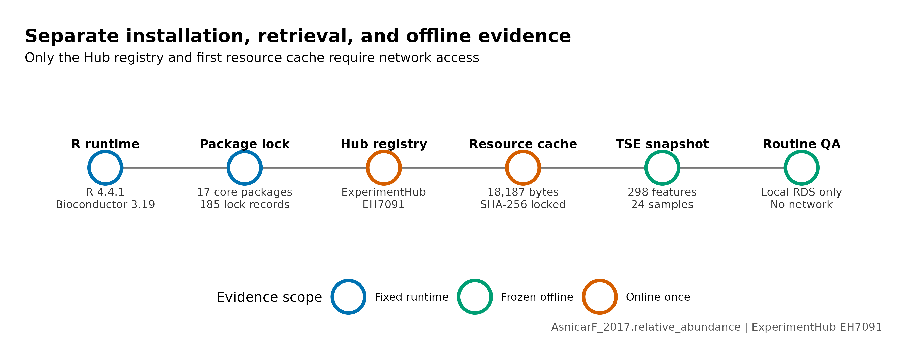
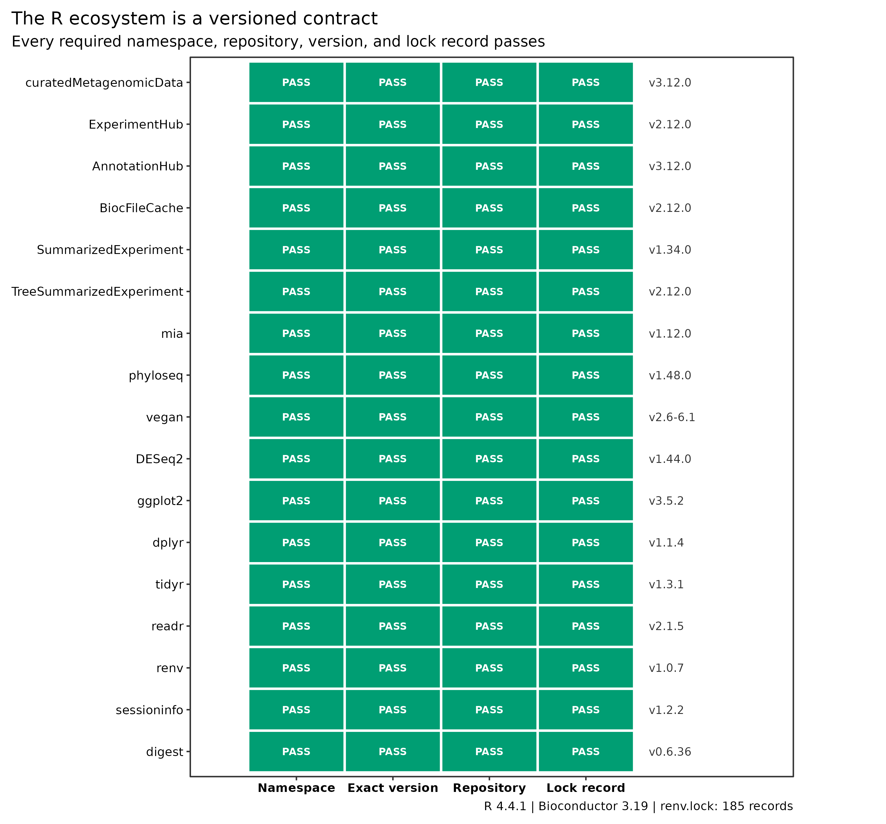
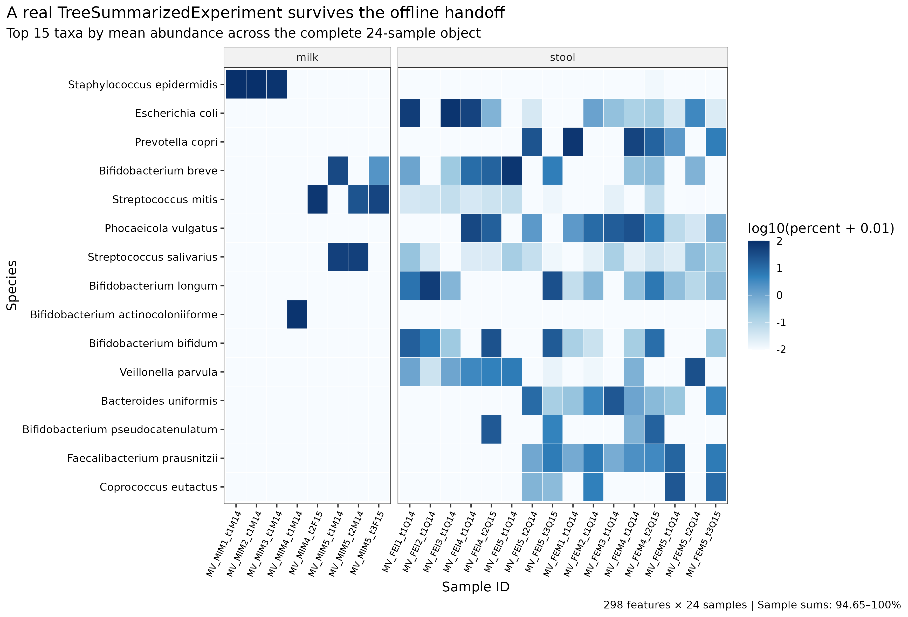

options(timeout = 600)
base_url <- "https://raw.githubusercontent.com/petemeng/metagenomics-best-practices/e219a2cd01609cc208a89e291cbd363ed7f2fbd8/"
files <- read.delim(paste0(base_url, "examples/12/files.tsv"))
for (i in seq_len(nrow(files))) {
path <- files$path[i]
dir.create(dirname(path), recursive = TRUE, showWarnings = FALSE)
if (!file.exists(path)) {
download.file(paste0(base_url, files$source[i]), path, mode = "wb")
}
}安装 R、curatedMetagenomicData 与关键包生态
学习目标：固定 R 与 Bioconductor 的配套代际，安装
curatedMetagenomicData及宏基因组下游所需的对象、生态统计、差异分析、作图和锁环境包；用官方AsnicarF_2017.relative_abundance资源完成一次真实下载，核对TreeSummarizedExperiment的行、列、assay、分类信息、样本信息和单位，再证明同一缓存可以离线重放。
真实数据：官方 ExperimentHub 资源EH7091，标题为2021-10-14.AsnicarF_2017.relative_abundance。对象来自 Asnicar 等的母婴菌株传播研究 (Asnicar 等 2017年)，包含 298 个分类特征、24 个样本、15 位受试者和 SRA accessionSRR4052021–SRR4052044。
预计资源：建议 2 核、8 GB RAM、2 GB 项目可用磁盘；首次安装通常 15–60 分钟，本文 18,187-byte Hub 资源的实际取回低于 1 分钟。共享服务器上应把 Hub cache 放进可写的项目或 scratch 路径；没有服务器时，可在本地 Linux、macOS 或 WSL2 完成这一步，后续大型 FASTQ 和数据库仍放到 HPC。
提示先确定这一点
先确认包版本和资源标识，再检查对象维度、单位与样本信息；缓存可用不等于来源已经记录完整。
从可用的 R 环境取回一个真实宏基因组对象
curatedMetagenomicData 最初把公开人类宏基因组的统一处理结果通过 ExperimentHub 暴露给 R (Pasolli 等 2017年)。cMD3 进一步汇总 22,710 个宏基因组、94 个数据集和 42 个国家，并用统一的 MetaPhlAn 3 / HUMAnN 3 谱支持跨队列分析 (Manghi 等 2026年)。资源论文 Figure 1 一类的总览图回答“有哪些队列、经过怎样的标准化”；真正开始统计前，还要回答“本机拿到的是哪个资源、什么对象、哪种单位”。
这一步可以拆成五道不可互相替代的证据：
Rscript能启动；- 指定版本的 namespace 能加载；
- ExperimentHub 能发现候选资源；
- 候选资源的字节已经下载并进入 cache；
- 新会话不访问网络也能恢复同一对象。

dryrun = TRUE 只到 discovery，不能证明对象已经下载。
下载本例数据与分析代码
数据与代码清单列出了本例的输入表、分析脚本和环境文件（约 0.3 MiB）。本清单不含原始 FASTQ 或大型数据库；是否需要它们取决于下文的分析起点。清单中的已计算结果仅供核对；读取结果表不等于重新运行统计模型或上游工具。
在新建文件夹中运行下面的 R 代码，下载完成后即可按正文中的相对路径读取文件。需要核验文件版本时，可使用带完整性检查的下载脚本。
包生态按职责分层
R 包不应只列成一串安装命令。本文固定的 17 个关键包分为五类：
| Layer | Core packages | 负责 |
|---|---|---|
| Resource access | curatedMetagenomicData, ExperimentHub, AnnotationHub, BiocFileCache |
查询、下载和缓存官方资源 |
| Data containers | SummarizedExperiment, TreeSummarizedExperiment |
对齐 assay、feature metadata、sample metadata 与树 |
| Microbiome analysis | mia, phyloseq, vegan, DESeq2 |
对象转换、生态统计与 count-scale 模型 |
| Tables and graphics | dplyr, tidyr, readr, ggplot2 |
整理表格和出版图 |
| Reproducibility | renv, sessioninfo, digest |
锁包、记录会话和校验文件 |

本次真实对象长什么样
对象的 assay 是 relative abundance（相对丰度），以约 0–100 的百分比尺度保存。图中展示按全体样本平均丰度排序的前 15 个真实物种；milk 与 stool 分面只是数据结构检查，不是母婴传播效应检验。

重要这不是 MetaPhlAn 4 的直接输出
本系列上游使用 MetaPhlAn 4，而 cMD3 的标准化分类谱来自 MetaPhlAn 3、功能谱来自 HUMAnN 3。二者不能在 Methods 中写成同一 profiling pipeline，也不应把跨版本差异解释成生物学变化。
先锁定输入、版本和算力边界
环境配置与完整运行说明
资源门槛
| Task | CPU | RAM | Free disk | Typical wall time | Network |
|---|---|---|---|---|---|
| R/Bioconductor package install | 2 | 8 GB | 2 GB | 15–60 min | required once |
| EH7091 first retrieval | 1 | <2 GB | <10 MB | <1 min observed | required once |
| Object audit + plots | 1–2 | <2 GB | <100 MB | 1–3 min | not required |
renv::restore() from empty cache |
2 | 8 GB | 2–5 GB | network-dependent | required |
包编译失败时，优先使用与 R 4.4 对应的系统开发库或 Bioconductor binary，不要混装另一代 R 的包目录。
安装固定代际
options(repos = c(CRAN = "https://cloud.r-project.org"))
install.packages(c("BiocManager", "renv"))
stopifnot(
getRversion() >= "4.4.0",
getRversion() < "4.5.0"
)
BiocManager::install(version = "3.19", ask = FALSE)
BiocManager::install(
c(
"curatedMetagenomicData",
"ExperimentHub",
"TreeSummarizedExperiment",
"mia",
"phyloseq",
"DESeq2"
),
ask = FALSE,
update = FALSE
)
install.packages(
c(
"vegan", "ggplot2", "dplyr", "tidyr", "readr",
"sessioninfo", "digest", "jsonlite"
)
)在完整仓库中恢复本文验证过的 185 条依赖记录：
renv::restore(
lockfile = "env/renv.lock",
prompt = FALSE
)固定历史结果与升级新项目应分成两条环境线。不要在已经恢复的 Bioconductor 3.19 library 内运行无边界的 update.packages()。
给 ExperimentHub 一个明确可写的 cache
cache_dir <- normalizePath(
".cache/R/ExperimentHub",
mustWork = FALSE
)
dir.create(cache_dir, recursive = TRUE, showWarnings = FALSE)
stopifnot(file.access(cache_dir, 2) == 0)
ExperimentHub::setExperimentHubOption("CACHE", cache_dir)共享计算节点上默认 $HOME/.cache 可能只读、配额过小或不适合大量并发。项目 cache 便于记录和清理；大型共享资源可由管理员放入版本化只读 cache，再通过权限和备份策略管理。
固定输入
env/renv.lock
data/small/12-package-contract.tsv
data/small/12-cmd-resource-manifest.tsv
data/small/12-cmd-asnicarf-2017-relative-abundance.rds
data/small/12-resource-retrieval.log
data/small/12-data-NOTICE.txt
scripts/retrieve_article12_cmd.R
scripts/validate_article12_r_cmd.R先核对关键字节：
sha256sum \
env/renv.lock \
data/small/12-cmd-asnicarf-2017-relative-abundance.rds
column -t -s $'\t' data/small/12-cmd-resource-manifest.tsv
head -n 18 data/small/12-package-contract.tsv预期：
cf448ad154eb7412d7c069cbb9ea5c5bcef8c48a047a775409d9982f513d540e env/renv.lock
2952774730bff2af9e13c9c40058320aed524dc2dc7408b44dc6e697c06564b2 data/small/12-cmd-asnicarf-2017-relative-abundance.rds加载包并固定随机数
set.seed(20260720)
library(curatedMetagenomicData)
library(ExperimentHub)
library(SummarizedExperiment)
library(TreeSummarizedExperiment)
library(mia)
library(phyloseq)
library(vegan)
library(DESeq2)
library(ggplot2)
library(dplyr)
library(tidyr)
library(readr)本文的下载和对象审计本身没有随机步骤；显式 seed 用于后续抽样、置换和图形标签调整时保持结果稳定。
内联作图函数
pal_pub <- c(
"Access" = "#20639B",
"Container" = "#6A4C93",
"Analysis" = "#2A9D8F",
"Graphics" = "#E9C46A",
"Reproducibility" = "#E76F51",
"Milk" = "#3A86FF",
"Stool" = "#8338EC",
"Pass" = "#176B4D",
"Not reached" = "#B7BDC4"
)
scale_color_pub <- function(...) {
ggplot2::scale_color_manual(values = pal_pub, ...)
}
scale_fill_pub <- function(...) {
ggplot2::scale_fill_manual(values = pal_pub, ...)
}
theme_pub <- function(base_size = 10) {
ggplot2::theme_bw(base_size = base_size, base_family = "sans") +
ggplot2::theme(
panel.grid = ggplot2::element_blank(),
axis.text = ggplot2::element_text(color = "black"),
axis.title = ggplot2::element_text(color = "black"),
plot.title.position = "plot",
plot.title = ggplot2::element_text(face = "bold"),
plot.caption.position = "plot",
legend.position = "bottom",
legend.key = ggplot2::element_blank(),
strip.background = ggplot2::element_rect(
fill = "#F2F2F2",
color = "#666666",
linewidth = 0.3
)
)
}
save_pub <- function(plot, stem, width = 7.4, height = 4.8) {
ggplot2::ggsave(
paste0(stem, ".pdf"),
plot = plot,
width = width,
height = height,
device = grDevices::cairo_pdf,
bg = "white"
)
ggplot2::ggsave(
paste0(stem, ".png"),
plot = plot,
width = width,
height = height,
dpi = 350,
bg = "white"
)
ggplot2::ggsave(
paste0(stem, ".tiff"),
plot = plot,
width = width,
height = height,
dpi = 350,
compression = "lzw",
bg = "white"
)
}先结果核对运行时和精确包版本
R 与 Bioconductor 是配套 release
Bioconductor 包依赖同一代的 S4 类、annotation infrastructure 和编译接口。本文复现的是固定历史环境：
R 4.4.1
└── Bioconductor 3.19
├── curatedMetagenomicData 3.12.0
├── ExperimentHub 2.12.0
├── TreeSummarizedExperiment 2.12.0
└── mia 1.12.0install.packages("curatedMetagenomicData") 不是正确安装路径；CRAN 并不知道应为当前 R 选择哪一代 Bioconductor。应先用 BiocManager::install(version = "3.19") 固定 release，再安装 Bioconductor 包。
对于今天新开的项目，可以选择当前受支持的 R/Bioconductor release；但一旦升级，就要生成新的 lock、重新取回资源、重新执行对象与结果 QA，不能继续引用本文的 3.19 验证结论。
r_version <- paste(R.version$major, R.version$minor, sep = ".")
bioc_version <- as.character(BiocManager::version())
stopifnot(
identical(r_version, "4.4.1"),
identical(bioc_version, "3.19"),
identical(
as.character(packageVersion("curatedMetagenomicData")),
"3.12.0"
),
identical(
as.character(packageVersion("TreeSummarizedExperiment")),
"2.12.0"
),
identical(as.character(packageVersion("mia")), "1.12.0"),
identical(as.character(packageVersion("phyloseq")), "1.48.0")
)
sessioninfo::session_info(
pkgs = c(
"curatedMetagenomicData", "ExperimentHub",
"TreeSummarizedExperiment", "mia", "phyloseq",
"vegan", "DESeq2"
)
)再检查 lock 是否包含同一版本，而不是只看当前 library：
lock <- jsonlite::read_json(
"env/renv.lock",
simplifyVector = FALSE
)
stopifnot(
identical(lock$R$Version, "4.4.1"),
identical(
lock$Bioconductor$Version,
"3.19"
),
identical(
lock$Packages$curatedMetagenomicData$Version,
"3.12.0"
)
)忠实复现：固定 cMD3 的已验证环境
本文先按 Bioconductor 3.19 官方包版本执行，而不是把今天的最新版包硬套到 2024 release：
- R
4.4.1； - Bioconductor
3.19； - curatedMetagenomicData
3.12.0； - ExperimentHub
EH7091； counts = FALSE、rownames = "long"；- 完整对象 SHA-256 固定；
- 在线取回与
LOCAL = TRUE重放逐对象identical()。
这是重现当前证据的保守路线。
注意坑 1：R 与 Bioconductor release 不配套
R 4.4 对应 Bioconductor 3.19/3.20 代际，而不是任意旧包目录。先报告 R.version.string 与 BiocManager::version()，再安装包；不要复制另一个 R minor 的 library。
用 dryrun 发现候选资源
dryrun、download 与 cache 是三种状态
调用：
curatedMetagenomicData(
"AsnicarF_2017.relative_abundance",
dryrun = TRUE
)只查询 metadata，返回可匹配的资源标题。本文实际看到两个日期版本：
2021-03-31.AsnicarF_2017.relative_abundance
2021-10-14.AsnicarF_2017.relative_abundance将 dryrun = FALSE 后，函数才解析匹配项、选择最新资源并触发 ExperimentHub 下载。再次使用同一 cache 时，LOCAL = TRUE 才能验证离线复用。把这三步混在一起，最常见的误判就是“查询成功，因此数据已经可复现”。
resource_pattern <- "AsnicarF_2017.relative_abundance"
candidate_titles <- curatedMetagenomicData(
resource_pattern,
dryrun = TRUE
)
candidate_titles实际输出：
[1] "2021-03-31.AsnicarF_2017.relative_abundance"
[2] "2021-10-14.AsnicarF_2017.relative_abundance"此时只证明 Hub metadata 可查询，尚未证明第二个资源的 18,187 bytes 已进入本地 cache。
Hub 资源与分析快照分层保存
ExperimentHub 适合发现与缓存资源，但正式分析还应建立 immutable snapshot：
Hub pattern + title + EH ID
↓
raw cache path + checksum
↓
complete analysis object + checksum
↓
renv.lock + session info
↓
statistical outputs + figures当 Hub metadata 或包 constructor 更新时，旧 RDS 仍可恢复；当对象内部 schema 变化时，resource manifest 可以解释两次对象为何不同。
注意坑 3：把 dryrun 当作下载成功
dryrun = TRUE 只返回匹配标题。必须保留实际 cache 文件、字节数、hash 和一次 LOCAL = TRUE 重放证据。
注意坑 4：只记录查询 pattern
同一 pattern 已匹配 2021-03-31 和 2021-10-14 两个资源。Methods 至少写 selected title、EH ID、retrieval date 和本地 snapshot checksum。
第一次联网取回真实对象
cache_dir <- normalizePath(
".cache/R/ExperimentHub",
mustWork = FALSE
)
dir.create(cache_dir, recursive = TRUE, showWarnings = FALSE)
ExperimentHub::setExperimentHubOption("CACHE", cache_dir)
ExperimentHub::setExperimentHubOption("LOCAL", FALSE)
cmd_online <- curatedMetagenomicData(
resource_pattern,
dryrun = FALSE,
counts = FALSE,
rownames = "long"
)
stopifnot(
length(cmd_online) == 1L,
identical(
names(cmd_online),
"2021-10-14.AsnicarF_2017.relative_abundance"
)
)
cmd <- cmd_online[[1L]]
stopifnot(methods::is(cmd, "TreeSummarizedExperiment"))rownames = "long" 保留从 kingdom 到 species 的完整分类路径，避免不同属中的同名或模糊末级标签在后续合并时碰撞。
把 profiler lineage 写进每张分析表
cMD3 的分类和功能资源统一到 MetaPhlAn 3 / HUMAnN 3 (Manghi 等 2026年)。本系列第 15 篇将使用 MetaPhlAn 4，marker catalog 和 SGB 空间已经变化。合并两类结果前应选择一种策略：
- 全部队列用同一 MetaPhlAn release 重跑；
- 只在相同 cMD3 profile lineage 内做 meta-analysis；
- 将不同 profiler 版本作为不可直接逐 feature 拼接的数据层，分别分析后合并效应量。
不能把 profiler version 当成可以用普通 batch correction 消掉的技术列；feature universe 本身可能已经改变。
cMD 不是 raw-data provenance 的替代品
cMD 让下游从标准化表开始，但不能回答：
- 原始 read-level QC 是否适合你的阈值；
- 去宿主、去污染和 profiler 参数如何影响某个样本；
- MetaPhlAn 4、Kraken2/Bracken 或自建数据库会产生什么结果；
- 某个 feature 的 read alignment 是否可信；
- 绝对丰度或活菌负荷是多少。
若结论依赖这些问题，应回到 SRA accession 和固定上游 pipeline 重跑，而不是从 cMD 百分比反推不存在的 read-level evidence。
把资源标题解析到 ExperimentHub ID
Hub 标题会更新，资源身份必须锁到字节
只记录模式 AsnicarF_2017.relative_abundance 不够，因为同一模式已经对应两个日期标题。本文保留：
| Field | Locked value |
|---|---|
| Pattern | AsnicarF_2017.relative_abundance |
| Selected title | 2021-10-14.AsnicarF_2017.relative_abundance |
| ExperimentHub ID | EH7091 |
| Raw cache SHA-256 | ad631532…4d69db27 |
| Snapshot SHA-256 | 29527747…06564b2 |
| Retrieval UTC | 2026-07-20T00:42:46Z |
Hub ID 和日期说明语义身份；SHA-256 说明本地字节身份。二者缺一不可。
hub <- ExperimentHub::ExperimentHub(localHub = FALSE)
hit <- AnnotationHub::query(
hub,
"2021-10-14.AsnicarF_2017.relative_abundance"
)
hit <- hit[
ExperimentHub::package(hit) %in% "curatedMetagenomicData"
]
stopifnot(
length(hit) == 1L,
identical(names(hit), "EH7091")
)
as.data.frame(S4Vectors::mcols(hit)) |>
dplyr::select(title, rdataclass, rdatapath, sourceurl)锁定结果：
ExperimentHub ID EH7091
resource title 2021-10-14.AsnicarF_2017.relative_abundance
rdataclass matrix
sourceurl https://www.ncbi.nlm.nih.gov/sraHub 内部资源以 matrix 存储；curatedMetagenomicData() 将 assay、样本 metadata 和 taxonomy tree 组装为 TreeSummarizedExperiment 返回。
注意坑 2：默认 ExperimentHub cache 不可写
错误常出现在 sqlite lock 或 BiocFileCache 初始化，而不是数据下载。先创建项目 cache，并用 file.access(cache_dir, 2) == 0 验证写权限。
注意坑 8：把 Hub 网络状态放进日常发布门
远程服务短暂不可用不应使已锁定结果无法渲染。一次性 retrieval 与日常离线 QA 分开；只有明确升级资源时才重新访问 Hub。
检查对象方向、metadata 与真实内容
TreeSummarizedExperiment 的行列方向是统计约定
TreeSummarizedExperiment 在 SummarizedExperiment 的 assay/metadata 对齐基础上加入层级树 (Huang 等 2021年)：
columns = samples
┌──────────────────────────┐
rows = features │ assay: relative_abundance│
└──────────────────────────┘
│ │
rowData colData
taxonomy ranks clinical metadata
│
rowTree
taxonomy hierarchy本文对象的合同为：
298 × 24，即 298 个 taxonomic features × 24 个 samples；- 一个 assay：
relative_abundance； rowData有superkingdom到species七列；colData有 22 列，包括subject_id、body_site、number_reads和NCBI_accession；rowTree有 298 个与 feature 对齐的 tips。
如果把矩阵转置后仍强行拼 metadata，代码可能继续运行，但距离、模型和图的意义全部颠倒。每次读入都要断言：
identical(rownames(assay(x)), rownames(rowData(x)))
identical(colnames(assay(x)), rownames(colData(x)))assay_names <- SummarizedExperiment::assayNames(cmd)
abundance <- SummarizedExperiment::assay(
cmd,
"relative_abundance"
)
taxa <- as.data.frame(SummarizedExperiment::rowData(cmd))
samples <- as.data.frame(SummarizedExperiment::colData(cmd))
taxonomy_tree <- TreeSummarizedExperiment::rowTree(cmd)
stopifnot(
identical(dim(cmd), c(298L, 24L)),
identical(assay_names, "relative_abundance"),
identical(dim(abundance), c(298L, 24L)),
identical(rownames(abundance), rownames(taxa)),
identical(colnames(abundance), rownames(samples)),
length(taxonomy_tree$tip.label) == 298L,
anyDuplicated(rownames(cmd)) == 0L,
anyDuplicated(colnames(cmd)) == 0L
)展示 taxonomy：
taxa |>
dplyr::select(
superkingdom, phylum, class, order,
family, genus, species
) |>
head(3)实际前三行：
superkingdom phylum genus species
Bacteria Proteobacteria Escherichia Escherichia coli
Bacteria Actinobacteria Bifidobacterium Bifidobacterium bifidum
Bacteria Actinobacteria Bifidobacterium Bifidobacterium longum展示样本来源：
samples |>
dplyr::select(
subject_id, body_site, study_condition,
disease, number_reads, NCBI_accession
) |>
head(3)实际前三行：
sample_id subject_id body_site condition reads accession
MV_FEI1_t1Q14 MV_FEI1 stool control 27553455 SRR4052021
MV_FEI2_t1Q14 MV_FEI2 stool control 32197545 SRR4052022
MV_FEI3_t1Q14 MV_FEI3 stool control 32310216 SRR4052033
注意坑 7：忽略 metadata 缺失和重复测量
24 列只有 15 位受试者，并混合 milk 与 stool。分析前审计每个协变量的缺失、每位受试者样本数和 body site；训练/测试拆分也必须按 subject 或 study，而不是按列随机。
检查 assay 的数值和单位
百分比不是原始 reads
本文 assay 的列和为 94.65166–100.00003，而不是整数 read counts。轻微高于 100 来自数值舍入；个别低于 100 是 cMD 构造层级树时移除了没有匹配 tree tip 的 taxon。colData(x)$number_reads 是整份样本的测序深度 metadata，并不是每个 taxon 的原始 read count。
curatedMetagenomicData(..., counts = TRUE) 会结合相对丰度与 number_reads 重建并取整近似 counts。它不是从原始 alignment 恢复的 feature-level counts，因此不能在不说明构造方式的情况下拿去替代原始 marker counts。
单位决定方法：
| Input | 合适操作 | 不应直接做 |
|---|---|---|
| Relative abundance (%) | composition plots、Bray–Curtis、适当变换后的关联模型 | 宣称为原始 reads |
| Reconstructed counts | 明确标注重建规则后的敏感性分析 | 假装是 profiler 原始整数输出 |
| Raw feature counts | count-aware model，连同 library size/filter contract | 当成已闭合百分比 |
number_reads metadata |
深度审计、协变量或纳入标准 | 广播成每个 feature 的 count |
sample_sums <- colSums(abundance)
stopifnot(
is.numeric(abundance),
all(is.finite(abundance)),
all(abundance >= 0),
max(abundance) <= 100,
min(sample_sums) >= 90,
max(sample_sums) <= 100.1,
sum(abundance %% 1 != 0) > 0
)
range(sample_sums)
median(sample_sums)实际结果：
range 94.65166 100.00003
median 99.999995这里最后一个断言专门证明矩阵含大量非整数值，防止后续代码把它误送入要求原始整数 counts 的接口。
建立每个样本的单位审计表：
sample_audit <- tibble::tibble(
sample_id = colnames(cmd),
subject_id = samples$subject_id,
body_site = samples$body_site,
number_reads = samples$number_reads,
assay_sum_percent = sample_sums,
unrepresented_percent = pmax(0, 100 - sample_sums)
)
sample_audit |>
dplyr::arrange(assay_sum_percent) |>
head()基础对象层与方法层分环境结果核对
vegan 接受 numeric community matrix，DESeq2 要求非负整数 counts，不同差异方法还对零、offset 和 compositionality 有不同假设。安装成功不能替代输入合同：
| Method family | Input gate |
|---|---|
| Bray–Curtis / ordination | 明确 feature × sample 方向、非负值和 preprocessing |
| CLR / Aitchison | 明确零值策略、闭合方式和 log-ratio reference |
| DESeq2 | 原始或有明确来源的整数 counts；不能直接用本文百分比 |
| Mixed models | subject ID、重复测量和 covariate missingness |
| Cross-cohort ML | study-level split；禁止 sample-level leakage |
因此包合同只证明接口存在；每个统计章节还要重新验收数据语义。
注意坑 5：矩阵方向颠倒
cMD 对象是 feature × sample。任何 as.data.frame()、t() 或对象转换后，都核对 assay 行列名与 rowData/colData 的一致性。
保存完整对象和 SHA-256
snapshot <- file.path(
"data",
"small",
"12-cmd-asnicarf-2017-relative-abundance.rds"
)
saveRDS(
cmd,
snapshot,
version = 3L,
compress = "xz"
)
snapshot_sha256 <- digest::digest(
file = snapshot,
algo = "sha256",
serialize = FALSE
)
stopifnot(
identical(
snapshot_sha256,
"2952774730bff2af9e13c9c40058320aed524dc2dc7408b44dc6e697c06564b2"
)
)RDS 保存的是完整 S4 对象，不只是 assay。读取后仍可恢复 rowData、colData 和 rowTree。
注意坑 6：把百分比送进 count model
本文 assay 包含非整数值，单位约为 0–100%。DESeq2 需要 count-scale 输入；不能通过简单乘 100 或四舍五入制造“原始 counts”。
证明同一 cache 可以离线重放
24 个样本不等于 24 个独立受试者
本对象只有 15 个 subject_id，部分受试者有多个时间点。把每一列都当独立生物学重复会产生伪重复（pseudoreplication）。正式推断至少要选择：
- 每位受试者一个预先定义时间点；
- 受试者内汇总；
- 或用 mixed model / subject-level blocking 显式建模重复测量。
milk 与 stool 还是不同 body site，组成差异巨大。若研究问题不是体位比较，应分层分析，不能把 body site 当作普通无关协变量。
ExperimentHub::setExperimentHubOption("LOCAL", TRUE)
cmd_offline <- curatedMetagenomicData(
resource_pattern,
dryrun = FALSE,
counts = FALSE,
rownames = "long"
)
stopifnot(
length(cmd_offline) == 1L,
identical(names(cmd_offline), names(cmd_online)),
identical(cmd_offline[[1L]], cmd_online[[1L]])
)LOCAL = TRUE 会拒绝用远程请求补齐缺失资源。若本地 cache 不完整，这一步应失败，而不是悄悄联网。
正式重复 QA 可以完全跳过 Hub client，只读 SHA-256 锁定的快照：
cmd_frozen <- readRDS(
"data/small/12-cmd-asnicarf-2017-relative-abundance.rds"
)
stopifnot(
methods::is(cmd_frozen, "TreeSummarizedExperiment"),
identical(dim(cmd_frozen), c(298L, 24L))
)转成 phyloseq 前后做守恒检查
ps <- mia::makePhyloseqFromTreeSummarizedExperiment(
cmd_frozen,
assay.type = "relative_abundance"
)
stopifnot(
phyloseq::ntaxa(ps) == nrow(cmd_frozen),
phyloseq::nsamples(ps) == ncol(cmd_frozen),
max(
abs(
phyloseq::sample_sums(ps) -
colSums(
SummarizedExperiment::assay(
cmd_frozen,
"relative_abundance"
)
)
)
) == 0
)转换成功不等于单位改变：ps 中仍是百分比相对丰度，不能因为对象类叫 phyloseq 就改写为 counts。
运行离线结果核对器
数据谱系卡片先于统计模型
| Item | 本文对象 |
|---|---|
| Study | AsnicarF_2017 |
| Public accessions | SRA SRR4052021–SRR4052044 |
| Raw reads available | Yes |
| Profile source | curatedMetagenomicData / ExperimentHub EH7091 |
| Profiler generation | cMD3 standardized taxonomic profile; MetaPhlAn 3 lineage |
| Feature type | Long-form species-level taxonomy paths |
| Unit | Relative abundance, approximately 0–100% |
| Normalization | Profiler-derived percentage; no extra rarefaction |
| Original publication | Asnicar et al. 2017 (Asnicar 等 2017年) |
| Local transformation | Complete TSE snapshot only; no biological filtering |
这张卡片阻止两类越界：把 cMD3 谱写成本教程 MetaPhlAn 4 产生的结果，或把百分比矩阵写成原始 counts。
mkdir -p results/12-install-r-cmd figures
R_LIBS_USER="$PWD/.r-lib:$HOME/R/library" \
Rscript --vanilla scripts/validate_article12_r_cmd.R \
--project-root "$PWD" \
--output-dir results/12-install-r-cmd \
--figure-dir figures验收摘要：
Article 12 validation passed:
121/121 checks
298 features × 24 samples
ExperimentHub EH7091
no network used输出包括包版本、lock、资源、对象、样本 metadata 和 R session 六类审计表/日志，以及三张 PDF、PNG 和 350 dpi LZW TIFF 图。
新项目升级 release 时做差异检查
升级 R/Bioconductor 后至少比较：
audit_upgrade <- tibble::tibble(
item = c(
"resource title",
"ExperimentHub ID",
"object class",
"dimensions",
"assay names",
"metadata names",
"feature IDs",
"sample IDs",
"assay checksum"
),
old = NA_character_,
new = NA_character_
)只有 schema、ID 和数值差异被解释后，才能把新环境的输出替代旧环境。不要只比较最终 P 值。
记录 R、Bioconductor 与资源版本
可直接改写的英文模板：
R environment and public metagenomic profiles. Analyses were performed in R 4.4.1 with Bioconductor 3.19. Package dependencies were restored from an
renvlockfile containing 185 package records (SHA-256:cf448ad154eb7412d7c069cbb9ea5c5bcef8c48a047a775409d9982f513d540e). Public taxonomic profiles were accessed with curatedMetagenomicData 3.12.0 through ExperimentHub 2.12.0. The queryAsnicarF_2017.relative_abundanceresolved to the date-stamped resource2021-10-14.AsnicarF_2017.relative_abundance(ExperimentHub IDEH7091; retrieved 20 July 2026). The complete returned TreeSummarizedExperiment was frozen as an RDS snapshot (SHA-256:2952774730bff2af9e13c9c40058320aed524dc2dc7408b44dc6e697c06564b2) containing 298 taxonomic features and 24 samples. The assay contained MetaPhlAn-derived relative abundances on an approximately 0–100% scale and was not treated as raw feature counts. Feature identifiers, sample identifiers, taxonomy, sample metadata, tree tips, finite non-negative values, and assay sums were validated before analysis. Routine validation read the checksum-locked snapshot without network access; an independent local-cache replay was object-identical to the initial online retrieval.
若换成其他数据集，再追加：
- profiler、profiler version 与 database release；
- selected cMD resource title / EH ID；
- feature rank 与
rownames形式； counts参数和单位；- 受试者、重复测量、body site 和纳入排除规则；
- package version、lock hash 和对象 hash。
不要只写“data were downloaded from curatedMetagenomicData”，因为它没有标识具体资源或处理谱系。
换到自己的研究中，先检查哪些条件？
路线 A：换成另一个 cMD 队列
先只做 metadata discovery：
all_candidates <- curatedMetagenomicData(
"relative_abundance",
dryrun = TRUE
)
grep(
"YourStudyName",
all_candidates,
value = TRUE
)确定 study 和 data type 后再精确查询：
your_pattern <- "YourStudyName.relative_abundance"
your_list <- curatedMetagenomicData(
your_pattern,
dryrun = FALSE,
counts = FALSE,
rownames = "long"
)
stopifnot(length(your_list) >= 1L)
your_object <- your_list[[length(your_list)]]不要默认 [[1]] 永远是最新版；先打印 names(your_list)，记录选择规则、标题和 EH ID。
最少审计：
stopifnot(
methods::is(your_object, "TreeSummarizedExperiment"),
nrow(your_object) > 0,
ncol(your_object) > 0,
anyDuplicated(rownames(your_object)) == 0,
anyDuplicated(colnames(your_object)) == 0,
identical(
rownames(SummarizedExperiment::assay(your_object)),
rownames(SummarizedExperiment::rowData(your_object))
),
identical(
colnames(SummarizedExperiment::assay(your_object)),
rownames(SummarizedExperiment::colData(your_object))
)
)路线 B：从自己的 MetaPhlAn 表构建标准对象
至少需要：
| Input | Rows | Columns | 必需字段 |
|---|---|---|---|
| abundance matrix | taxa | samples | numeric values + unit |
| taxonomy table | taxa | ranks | feature IDs 与矩阵完全一致 |
| sample metadata | samples | variables | sample ID、subject ID、group、batch |
| lineage card | one row per dataset | provenance | profiler/database/release/unit |
读入并对齐：
abundance <- readr::read_tsv(
"your_data/metaphlan_relative_abundance.tsv",
show_col_types = FALSE
) |>
tibble::column_to_rownames("feature_id") |>
as.matrix()
taxonomy <- readr::read_tsv(
"your_data/taxonomy.tsv",
show_col_types = FALSE
) |>
tibble::column_to_rownames("feature_id")
metadata <- readr::read_tsv(
"your_data/sample_metadata.tsv",
show_col_types = FALSE
) |>
tibble::column_to_rownames("sample_id")
stopifnot(
identical(rownames(abundance), rownames(taxonomy)),
setequal(colnames(abundance), rownames(metadata))
)
metadata <- metadata[colnames(abundance), , drop = FALSE]
stopifnot(identical(colnames(abundance), rownames(metadata)))没有可信层级树时，先构建 SummarizedExperiment，不要伪造 rowTree：
your_se <- SummarizedExperiment::SummarizedExperiment(
assays = list(relative_abundance = abundance),
rowData = S4Vectors::DataFrame(taxonomy),
colData = S4Vectors::DataFrame(metadata)
)只有在 taxonomy path 能稳定映射到一棵显式树、且 tip 与 feature 一一对应时，再升级为 TreeSummarizedExperiment。
路线 C：从 HUMAnN 表开始
HUMAnN gene-family abundance、pathway abundance 和 pathway coverage 是不同 assay 语义。还要先决定：
- 使用 stratified 还是 unstratified rows；
- abundance 是否已转换为 CPM/relative abundance；
- pathway coverage 是否与 abundance 分开保存；
UNMAPPED、UNINTEGRATED、UNCLASSIFIED如何报告；- feature IDs 对应 UniRef、MetaCyc reaction 还是 pathway。
不要把 pathway coverage 与 pathway abundance 放进同一个数值矩阵后统一归一化。它们应是不同 assay 或不同对象，并分别写单位合同。
图中应该保留哪些信息？
数据访问边界图
access <- tibble::tribble(
~step, ~evidence, ~status,
1, "R starts", "Pass",
2, "Namespaces load", "Pass",
3, "Hub discovers candidates", "Pass",
4, "EH7091 bytes retrieved", "Pass",
5, "Offline object replay", "Pass"
) |>
dplyr::mutate(
evidence = factor(evidence, levels = rev(evidence))
)
p_access <- ggplot(
access,
aes(x = 1, y = evidence, fill = status)
) +
geom_tile(width = 0.72, height = 0.68, color = "white") +
geom_text(aes(label = paste0("Gate ", step)), color = "white") +
scale_fill_manual(values = c("Pass" = pal_pub[["Pass"]])) +
scale_x_continuous(NULL, breaks = NULL) +
labs(
y = NULL,
title = "Data access is a five-gate contract",
caption = "Discovery alone does not prove retrieval or offline reuse."
) +
theme_pub() +
theme(legend.position = "none")
save_pub(
p_access,
"figures/12-r-data-access-boundaries",
width = 7.4,
height = 4.0
)包职责矩阵
package_contract <- readr::read_tsv(
"data/small/12-package-contract.tsv",
show_col_types = FALSE
)
role_map <- package_contract |>
dplyr::mutate(
layer = dplyr::case_when(
package %in% c(
"curatedMetagenomicData", "ExperimentHub",
"AnnotationHub", "BiocFileCache"
) ~ "Access",
package %in% c(
"SummarizedExperiment", "TreeSummarizedExperiment"
) ~ "Container",
package %in% c(
"mia", "phyloseq", "vegan", "DESeq2"
) ~ "Analysis",
package %in% c(
"ggplot2", "dplyr", "tidyr", "readr"
) ~ "Graphics",
TRUE ~ "Reproducibility"
),
package = factor(package, levels = rev(package)),
present = 1
)
p_packages <- ggplot(
role_map,
aes(x = layer, y = package, fill = layer)
) +
geom_tile(color = "white", linewidth = 0.4) +
geom_text(aes(label = expected_version), size = 2.8) +
scale_fill_pub() +
labs(
x = NULL,
y = NULL,
title = "Each package has an explicit role and version",
caption = "Numbers inside tiles are fixed package versions."
) +
theme_pub() +
theme(
legend.position = "none",
axis.text.x = element_text(angle = 30, hjust = 1)
)
save_pub(
p_packages,
"figures/12-package-role-contract",
width = 8.2,
height = 6.0
)真实对象热图
cmd <- readRDS(
"data/small/12-cmd-asnicarf-2017-relative-abundance.rds"
)
abundance <- SummarizedExperiment::assay(
cmd,
"relative_abundance"
)
taxa <- as.data.frame(SummarizedExperiment::rowData(cmd))
samples <- as.data.frame(SummarizedExperiment::colData(cmd))
top_ids <- names(
sort(rowMeans(abundance), decreasing = TRUE)
)[seq_len(15)]
heatmap_data <- as.data.frame(abundance[top_ids, , drop = FALSE]) |>
tibble::rownames_to_column("feature_id") |>
tidyr::pivot_longer(
-feature_id,
names_to = "sample_id",
values_to = "relative_abundance"
) |>
dplyr::left_join(
tibble::rownames_to_column(samples, "sample_id") |>
dplyr::select(sample_id, body_site),
by = "sample_id"
) |>
dplyr::mutate(
species = taxa[feature_id, "species"],
body_site = dplyr::recode(
body_site,
"milk" = "Milk",
"stool" = "Stool"
),
species = factor(
species,
levels = rev(taxa[top_ids, "species"])
)
)
p_heatmap <- ggplot(
heatmap_data,
aes(
x = sample_id,
y = species,
fill = log10(relative_abundance + 0.01)
)
) +
geom_tile(color = "white", linewidth = 0.12) +
facet_grid(. ~ body_site, scales = "free_x", space = "free_x") +
scale_fill_viridis_c(
option = "C",
name = expression(log[10] * "(relative abundance + 0.01)")
) +
labs(
x = "Sample",
y = "Species",
title = "AsnicarF 2017 relative-abundance object",
subtitle = "Top 15 taxa by mean abundance; 24 public metagenomes"
) +
theme_pub(9) +
theme(
axis.text.x = element_text(angle = 60, hjust = 1, vjust = 1),
legend.position = "right"
)
save_pub(
p_heatmap,
"figures/12-cmd-object-contract",
width = 10.2,
height = 6.6
)颜色表示连续丰度，不用离散组别色模拟数值梯度；物种名和样本 ID 保留英文，PDF 用于矢量编辑，PNG/TIFF 用于网页和期刊位图提交。
回到最初的问题
R 能启动、包能加载、Hub 能查询、对象已下载和断网后仍能复用，是五个必须分别验证的事实。
参考文献
- curatedMetagenomicData 初版资源与 ExperimentHub 接口：(Pasolli 等 2017年)。
- curatedMetagenomicData 3 数据资源与统一 profiling：(Manghi 等 2026年)。
- TreeSummarizedExperiment 对象设计：(Huang 等 2021年)。
- 本文示例队列与母婴菌株传播研究：(Asnicar 等 2017年)。
- curatedMetagenomicData 3.12.0（Bioconductor 3.19）
- curatedMetagenomicData reference manual
- ExperimentHub 2.12.0
- Bioconductor release announcements
- R installation and administration
- renv documentation